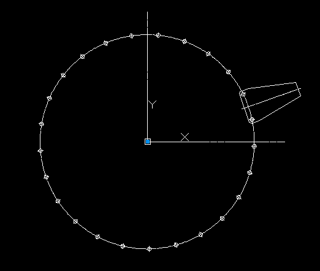
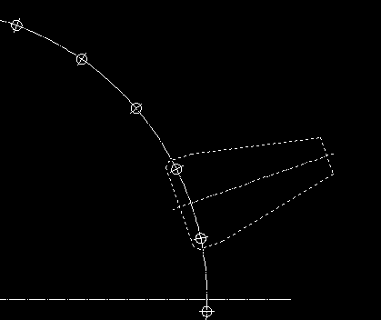
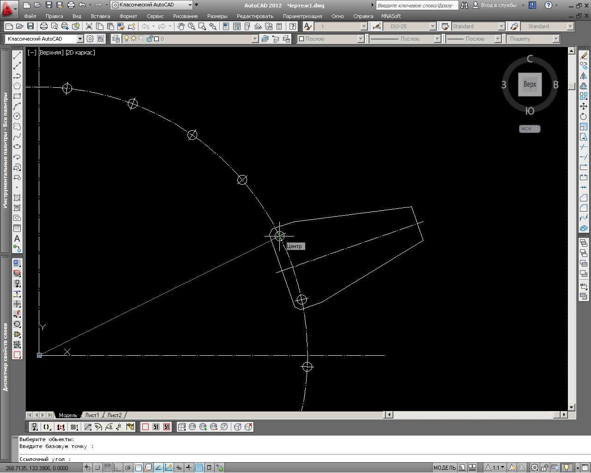
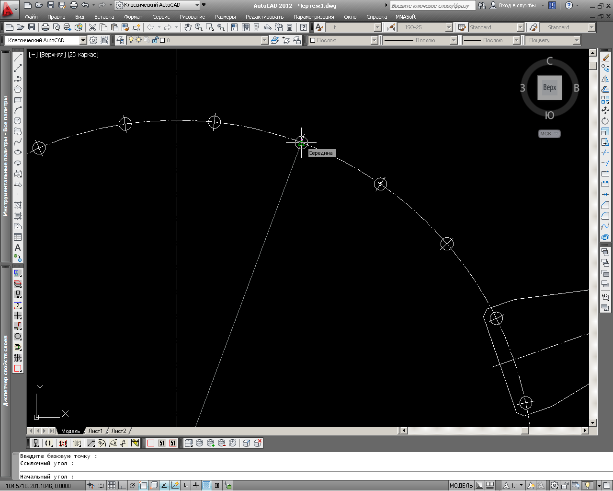
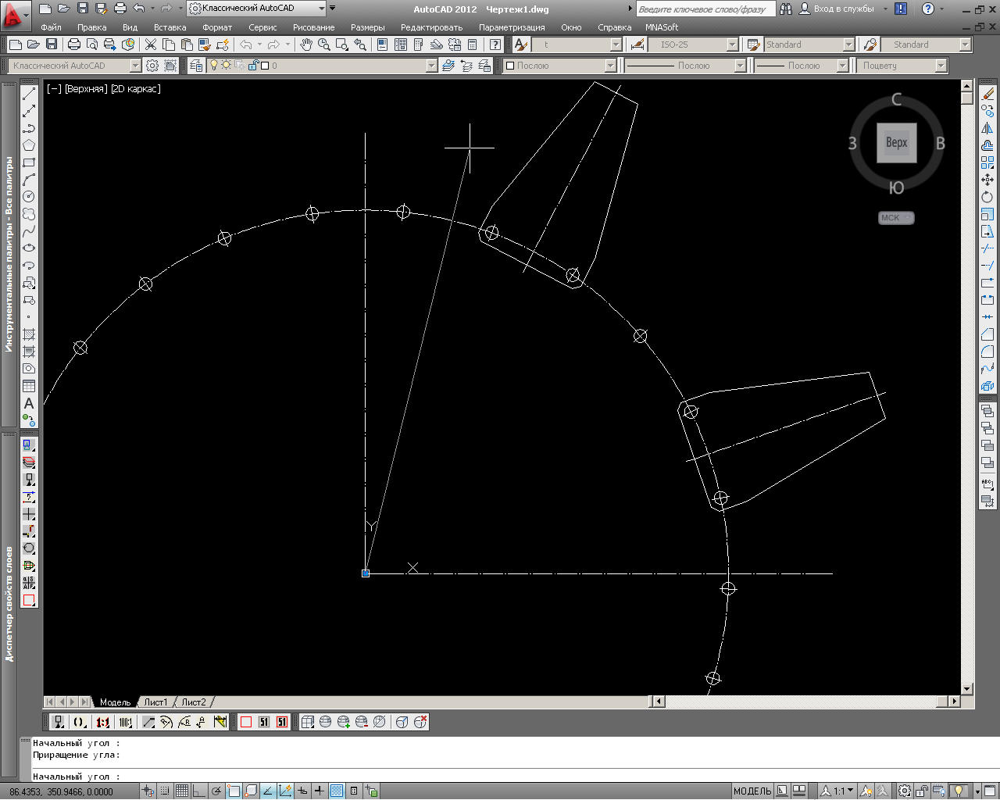

Рисунок 1 - Перед выполнением команды CR
Команда: CR
Выберите примитивы для поворота :
Выберите объекты: Противоположный угол: найдено: 9
Выберите объекты:

Рисунок 2 - Выбор примитивов для копирования по окружности
Введите базовую точку :
Ссылочный угол :

Рисунок 3 - Указание базовой точки и ссылочного угла
Начальный угол :
Приращение угла:

Рисунок 4 - Указание начального угла и приращения (пустой ввод обозначает, что приращение=0)

Рисунок 5 - Набор примитивов размножен по окружности
Начальный угол :
Приращение угла:
Рисунок 6 - Указание начального угла и приращения для следующего места коприрования набора примитивов